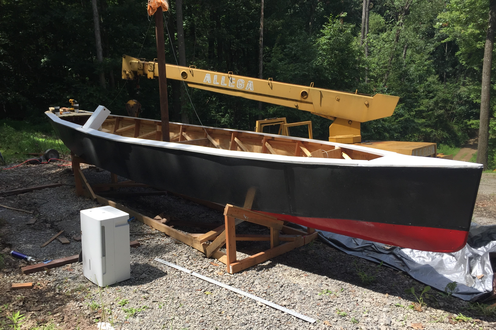

Steam Launch
Christmas 2018-Present
State of the Art 1890s Marine Technology

A launch is a kind of small recreational boat generally used for just cruising around, as opposed to being built for fishing, watersports, etc. A steam launch, then, is a launch powered by steam. These kinds of boats are popular amongst fans of steam engines and steam hobbists. Me and my father had talked about building a steam launch for a long time but my father was always too busy and thought it would be too much work, so I decided to undertake the project myself during my Christmas break, 2018. Many steam launches are meticulously built by highly skilled artisans over the course of years, resulting in gorgeous, impeccable boats that are wonders of advanced woodworking. My boat, on the other hand, was designed to be easy and cheap to build, at the cost of having some flaws that I can tolerate. The hull is made from plywood, reinforced by frames of cherry wood from my sawmill. Because it's difficult to get a lot of power in such a small boat when you're using steam engines, the hull had to be fairly efficient so it was built with a high aspect ratio; long and slender. The boat is 25' long, but only about 4' wide at the waterline.
Some of the frames being assembled, and preparing to add some initial plywood panels. (If you're concerned, a lot of additional bracing would be added later once the frame was stabilized)
Once the plywood hull was attached and some additional bracing added, the hull was painted with 5 layers of a heavy oil-based paint, which rendered the wood just about impervious to water. It is worth noting that the boat will not be stored in the water, so it will not need to withstand submergance for more than a few hours at a time, and then will have weeks for any minor water incursion to dry. The thrust from the propeller would be absorbed by a bearing housing I designed that held two tapered roller bearings, like a machine spindle. The propeller fit over the shaft and a large castle nut would secure it. The back of the shaft would be fitted with a universal joint to the driveshaft, which would then run through the hull and the stuffing box, to another universal joint and then to the engine. The universal joints allow the boat to have the engine and the propeller axes parallel to the waterline, which is both more efficient and looks better. The thrust from the propeller is then transfered from the bearing housing to the hull through two stainless steel arms that bolt through the hull and directed to the solid frame. The steering was accomplished by building a worm-gearbox and long reach rods with more universal joints that ran up to the cockpit area. The ships wheel then connected to this reach rod via a belt.
The propeller and bearing housing assembled. The ends of the housing were made with seals to keep water out, and a zerk fitting was added to ease greasing the bearings.
The steering gear reach rods and belt. The ships wheel is barely visible.
Trim was added around the top of the hull (known as the sheer), and the bow and stern stations were enclosed with plywood on top. Watertight bulkheads were added to the first two stations, since I considered those two areas to be the most vulnerable to an accident. These bulkheads mean that even in the event of a major accident where the boat strikes some object violently, puncturing the hull near the bow, the boat will not sink. The bilge area was painted as well, to help keep out whatever small amount of water gets into the boat. Floor joists were added and plywood flooring was added, except in the area that would eventually house the boiler and engine areas. This flooring was painted white.